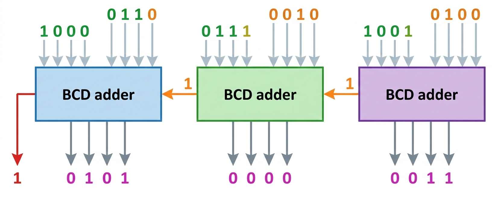
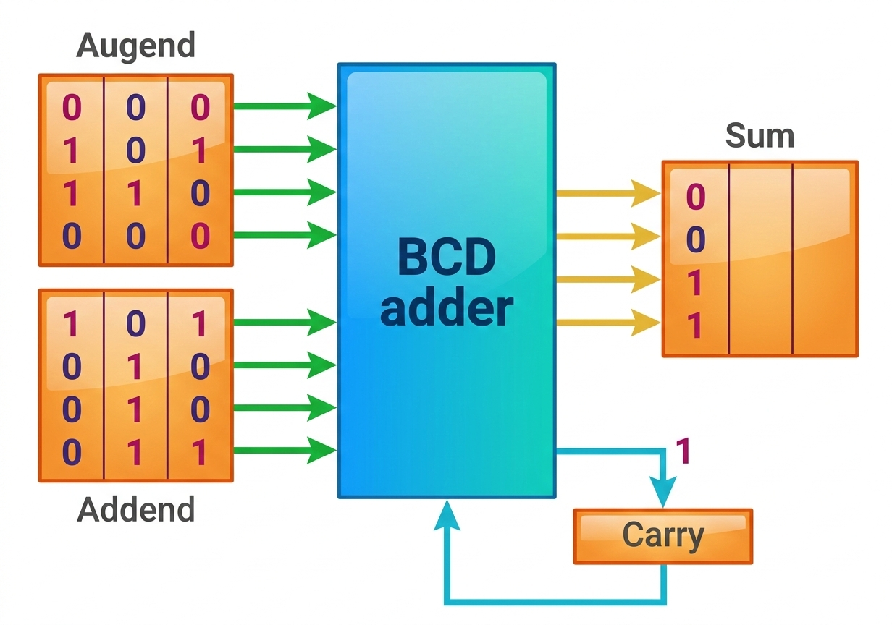
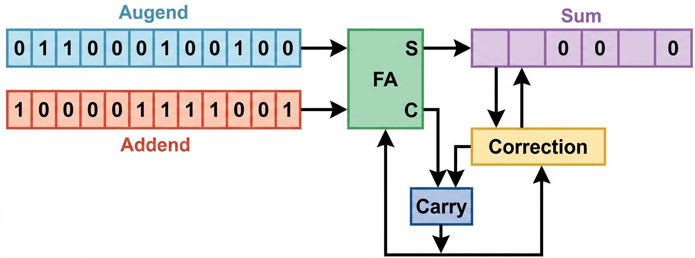

⚡ Parallel Decimal Addition
The parallel method uses a decimal arithmetic unit composed of BCD (Binary Coded Decimal) adders to add all digits in parallel simultaneously.
How It Works
Example: 624 + 879 = 1503
All digit pairs are added simultaneously using multiple BCD adders:
- Units place: 4 + 9 = 13; Sum: 3(0011) with carry 1
- Tens place: 2 + 7 + carry = 10; Sum: 0 (0000) with carry 1
- Hundreds place: 6 + 8 + carry = 15; Sum: 5 (0101) with carry 1

Each BCD adder processes one digit position in parallel
✅ Advantages
Fastest method - all digits processed simultaneously
Fixed time complexity regardless of number size
Best for applications requiring high speed
⚠️ Disadvantages
Requires multiple BCD adders (expensive)
Higher hardware cost and complexity
More power consumption
🔄 Digit-Serial Bit-Parallel Addition
This method processes one digit at a time using a single BCD adder, but each digit is processed in parallel (all bits simultaneously).
Process Flow
Key Characteristics:
- Uses only ONE BCD adder (shared across all digits)
- Processes digits serially from right to left
- Each digit's 4 bits processed in parallel
- Requires one microoperation per digit position
- Carry propagates between digit additions
Single BCD Adder Processing Sequence:

Step 1: Add units digits → Generate carry
Step 2: Add tens digits + carry → Generate carry
Step 3: Add hundreds digits + carry → Complete
✅ Advantages
Lower equipment cost (one BCD adder)
Balanced speed vs. cost trade-off
Moderate power consumption
⚠️ Disadvantages
Slower than parallel method
Time increases with number of digits
Sequential carry propagation
🐌 All-Serial Decimal Addition
The slowest but most economical method - processes one bit at a time through a full-adder, shifting bits serially.
How It Works
Serial Processing:
- Uses a single full-adder for all operations
- Bits shifted one at a time through the adder
- Each digit requires 4 cycles (4 bits per BCD digit)
- Decimal carry correction after each digit
- Binary sum checked: if > 1010 (10), add 0110 (6) for correction
Decimal Correction Logic:
When binary sum exceeds 9 (1001 in binary), add 6 (0110) to convert to proper BCD format and generate carry.
This ensures BCD digits stay within valid 0-9 range.

✅ Advantages
Minimal hardware requirements
Lowest equipment cost
Simple design and implementation
Lowest power consumption
⚠️ Disadvantages
Very slow - bit-by-bit processing
Time proportional to digits × 4
Not suitable for time-critical applications